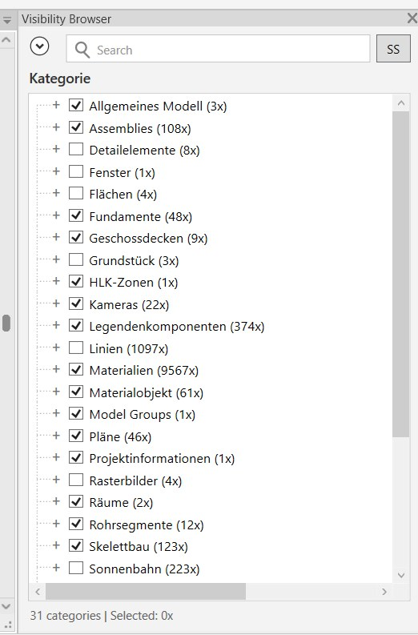
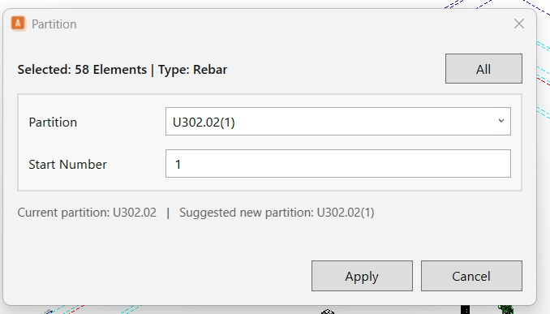
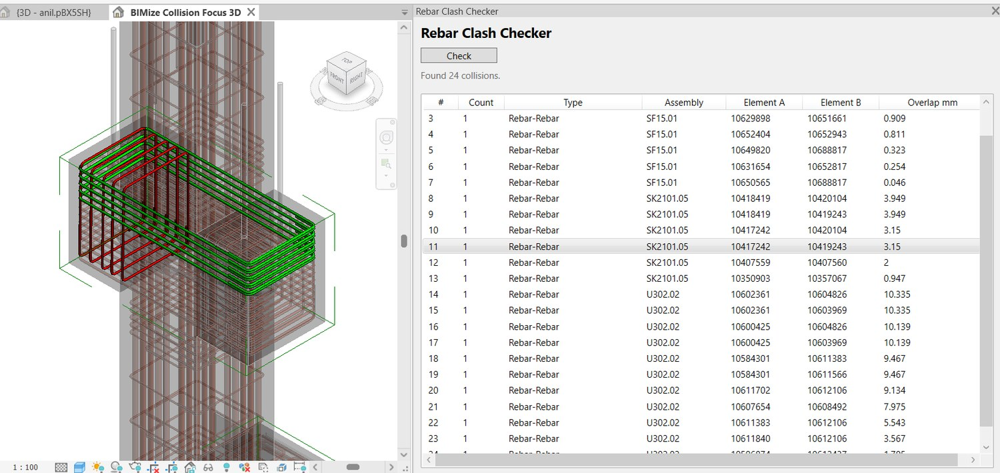

Assembly
Create and edit assemblies with confidence.
Reduce repetitive setup and keep assembly content consistent through dedicated creation and editing workflows.
View documentation
Visibility
Keep context while focusing on the right elements.
Spotlight, transparent selection, visibility browsing and parts control help teams inspect complicated models without losing orientation.
Explore visibility tools
Reinforcement
Turn reinforcement data into organised production output.
Renumber, partition, mesh cut plans and shape details support repeatable reinforcement documentation.
Explore reinforcement
Quality & coordination
Catch model issues before they reach production.
Review warnings and reinforcement clashes in focused tools designed for practical resolution.
See QA workflows